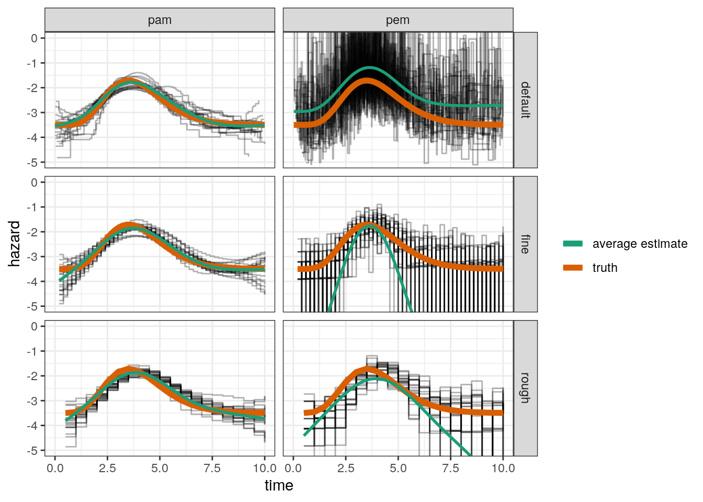

Last updated: 2019-11-25
Checks: 6 1
Knit directory: simpamm/
This reproducible R Markdown analysis was created with workflowr (version 1.5.0). The Checks tab describes the reproducibility checks that were applied when the results were created. The Past versions tab lists the development history.
Great! Since the R Markdown file has been committed to the Git repository, you know the exact version of the code that produced these results.
Great job! The global environment was empty. Objects defined in the global environment can affect the analysis in your R Markdown file in unknown ways. For reproduciblity it’s best to always run the code in an empty environment.
The command set.seed(20180517) was run prior to running the code in the R Markdown file. Setting a seed ensures that any results that rely on randomness, e.g. subsampling or permutations, are reproducible.
Great job! Recording the operating system, R version, and package versions is critical for reproducibility.
To ensure reproducibility of the results, delete the cache directory pem_vs_pam_cache and re-run the analysis. To have workflowr automatically delete the cache directory prior to building the file, set delete_cache = TRUE when running wflow_build() or wflow_publish().
Great job! Using relative paths to the files within your workflowr project makes it easier to run your code on other machines.
Great! You are using Git for version control. Tracking code development and connecting the code version to the results is critical for reproducibility. The version displayed above was the version of the Git repository at the time these results were generated.
Note that you need to be careful to ensure that all relevant files for the analysis have been committed to Git prior to generating the results (you can use wflow_publish or wflow_git_commit). workflowr only checks the R Markdown file, but you know if there are other scripts or data files that it depends on. Below is the status of the Git repository when the results were generated:
Ignored files:
Ignored: .Rhistory
Ignored: .Rproj.user/
Ignored: analysis/confidence-intervals_cache/
Ignored: analysis/pem_vs_pam_cache/
Ignored: analysis/time-varying-cumulative-effect_cache/
Untracked files:
Untracked: analysis/fit-vs-truth-ped.gif
Untracked: analysis/time-varying-cumulative-effect.Rmd
Untracked: output/sim-conf-int-registry/
Untracked: output/sim-lag-lead-registry/
Untracked: output/sim-pem-vs-pam-registry/
Untracked: output/tve-cumulative-registry/
Untracked: sandbox/
Untracked: simpamm.Rproj
Note that any generated files, e.g. HTML, png, CSS, etc., are not included in this status report because it is ok for generated content to have uncommitted changes.
These are the previous versions of the R Markdown and HTML files. If you’ve configured a remote Git repository (see ?wflow_git_remote), click on the hyperlinks in the table below to view them.
| File | Version | Author | Date | Message |
|---|---|---|---|---|
| html | 45c6520 | Andreas Bender | 2019-11-25 | Build site. |
| Rmd | 4ea7082 | Andreas Bender | 2019-11-25 | Add sim study on confidence intervals |
| html | ea2d27e | adibender | 2018-05-22 | Build site. |
| Rmd | e23c774 | adibender | 2018-05-22 | wflow_publish(“analysis/pem_vs_pam.Rmd”) |
| html | fc7e6b6 | adibender | 2018-05-22 | Build site. |
| html | 3e000e5 | adibender | 2018-05-22 | Build site. |
| Rmd | 4ddf7b2 | adibender | 2018-05-22 | wflow_publish(“analysis/pem_vs_pam.Rmd”) |
| html | da628e9 | adibender | 2018-05-22 | Build site. |
| Rmd | 870faf5 | adibender | 2018-05-22 | wflow_publish(c(“analysis/pem_vs_pam.Rmd”)) |
| html | 2542e6b | adibender | 2018-05-22 | Build site. |
| Rmd | e7b4b2d | adibender | 2018-05-22 | wflow_publish(c(“analysis/pem_vs_pam.Rmd”)) |
| html | e9f8507 | adibender | 2018-05-22 | Build site. |
| Rmd | 14e326b | adibender | 2018-05-22 | wflow_publish(c(“analysis/pem_vs_pam.Rmd”)) |
| html | 1e706df | adibender | 2018-05-22 | Build site. |
| Rmd | f963aae | adibender | 2018-05-22 | wflow_publish(c(“analysis/pem_vs_pam.Rmd”)) |
library(ggplot2)
theme_set(theme_bw())
library(batchtools)This is a light-weight simulation study to investigate how sensitive the different approaches (PEM vs. PAM) to the estimation of the baseline-hazard function are to the placement of the interval split points.
The setup is as follows:
\(n=250\) survival times are simulated from a distribution with log-hazard \(-3.5 + f(8,2)*6\), where \(f(8,2)\) is the density function of the Gamma distribution with respective parameters.
The baseline hazard is estimated by a PEM and PAM respectively
Three different settings are used for the interval split point definition
Function for data simulation (using pammtools::sim_pexp):
## simulation function
sim_wrapper <- function(data, job, n = 250, time_grid = seq(0, 10, by = 0.05)) {
# create data set with covariates
df <- tibble::tibble(x1 = runif(n, -3, 3), x2 = runif(n, 0, 6))
# baseline hazard
f0 <- function(t) {dgamma(t, 8, 2) * 6}
# define function that generates nz exposures z(t_{z,1}), ..., z(t_{z,Q})
sim_pexp(formula = ~ -3.5 + f0(t), data = df, cut = time_grid)
}Function to estimate hazard from simulated data, either by a PEM or PAM
## estimation function
pam_wrapper <- function(data, job, instance,
cut = NA,
bs = "ps",
mod_type = c("pem", "pam") ,
max_time = 10) {
if(is.na(cut)) {
cut <- NULL
} else {
if(cut == "rough") {
cut <- seq(0, max_time, by = 0.5)
} else {
if(cut == "fine") {
cut <- seq(0, max_time, by = 0.2)
}
}
}
ped <- as_ped(data = instance, formula = Surv(time, status) ~ ., cut = cut, id="id")
form <- "ped_status ~ s(tend) + s(x1) + s(x2)"
if(mod_type == "pem") {
form <- ped_status ~ interval
time_var <- "interval"
} else {
form <- ped_status ~ s(tend, bs = bs, k = 10)
time_var <- "tend"
}
mod <- gam(formula = form, data = ped, family = poisson(), offset = offset, method = "REML")
# summary(mod)
make_newdata(ped, tend=unique(tend)) %>%
add_hazard(mod, type="link", se_mult = qnorm(0.975), time_var = time_var) %>%
mutate(truth = -3.5 + dgamma(tend, 8, 2) * 6)
}Setup simulation using batchtools:
if(!checkmate::test_directory_exists("output/sim-pem-vs-pam-registry")) {
reg <- makeExperimentRegistry("output/sim-pem-vs-pam-registry",
packages = c("mgcv", "dplyr", "tidyr", "pammtools"),
seed = 20052018)
reg$cluster.functions = makeClusterFunctionsMulticore(ncpus = 2)
addProblem(name = "pem-vs-pam", fun = sim_wrapper)
addAlgorithm(name = "pem-vs-pam", fun = pam_wrapper)
algo_df <- tidyr::crossing(
cut = c(NA, "fine", "rough"),
mod_type = c("pem", "pam"))
addExperiments(algo.design = list("pem-vs-pam" = algo_df), repls = 20)
submitJobs()
waitForJobs()
}
Warning: The above code chunk cached its results, but it won’t be re-run if previous chunks it depends on are updated. If you need to use caching, it is highly recommended to also set knitr::opts_chunk$set(autodep = TRUE) at the top of the file (in a chunk that is not cached). Alternatively, you can customize the option dependson for each individual chunk that is cached. Using either autodep or dependson will remove this warning. See the knitr cache options for more details.
reg <- loadRegistry("output/sim-pem-vs-pam-registry", writeable = TRUE)
ids_pam <- findExperiments(prob.name="pem-vs-pam", algo.name="pem-vs-pam")
pars <- unwrap(getJobPars()) %>% as_tibble()
res <- reduceResultsDataTable(ids=findDone(ids_pam)) %>%
as_tibble() %>%
tidyr::unnest() %>%
left_join(pars) %>%
mutate(cut = case_when(is.na(cut) ~ "default", TRUE ~ cut))
res %>%
mutate(
sq_error = (truth - hazard)^2,
covered = (truth >= ci_lower) & (truth <= ci_upper)) %>%
group_by(job.id, mod_type, cut) %>%
summarize(
RMSE = sqrt(mean(sq_error)),
coverage = mean(covered)) %>%
group_by(mod_type, cut) %>%
summarize(
RMSE = mean(RMSE),
coverage = mean(coverage))# A tibble: 6 x 4
# Groups: mod_type [2]
mod_type cut RMSE coverage
<chr> <chr> <dbl> <dbl>
1 pam default 0.223 0.881
2 pam fine 0.268 0.916
3 pam rough 0.281 0.92
4 pem default 1.38 0.870
5 pem fine 6.84 0.966
6 pem rough 3.02 0.92 ggplot(res, aes(x=tend, y = hazard)) +
geom_step(aes(group = job.id), alpha = 0.3) +
geom_line(aes(y = truth, col = "truth"), lwd = 2) +
facet_grid(cut ~ mod_type) +
coord_cartesian(ylim=c(-5, 0)) +
geom_smooth(aes(col="average estimate"), method="gam", formula = y ~ s(x),
se=FALSE) +
scale_color_brewer("", palette = "Dark2") +
xlab("time")
For the PAM, the RMSE has about the same magnitude for all three split point settings
For the PEM, the RMSE is highly dependent on the RMSE, partly because even for the “rough” split point setting, in some simulations some intervals have no events and the hazard is estimated close to zero (very small log-hazard values) and for the “default” setting, where each interval contains at least one event, appears to overestimate the hazard on average
sessionInfo()R version 3.6.1 (2019-07-05)
Platform: x86_64-pc-linux-gnu (64-bit)
Running under: Ubuntu 18.04.3 LTS
Matrix products: default
BLAS: /usr/lib/x86_64-linux-gnu/blas/libblas.so.3.7.1
LAPACK: /usr/lib/x86_64-linux-gnu/lapack/liblapack.so.3.7.1
locale:
[1] LC_CTYPE=en_US.UTF-8 LC_NUMERIC=C
[3] LC_TIME=en_US.UTF-8 LC_COLLATE=en_US.UTF-8
[5] LC_MONETARY=en_US.UTF-8 LC_MESSAGES=en_US.UTF-8
[7] LC_PAPER=en_US.UTF-8 LC_NAME=C
[9] LC_ADDRESS=C LC_TELEPHONE=C
[11] LC_MEASUREMENT=en_US.UTF-8 LC_IDENTIFICATION=C
attached base packages:
[1] stats graphics grDevices utils datasets methods base
other attached packages:
[1] pammtools_0.1.14 tidyr_1.0.0 dplyr_0.8.3 mgcv_1.8-31
[5] nlme_3.1-142 batchtools_0.9.11 data.table_1.12.6 ggplot2_3.2.1
loaded via a namespace (and not attached):
[1] progress_1.2.2 tidyselect_0.2.5 xfun_0.11 reshape2_1.4.3
[5] purrr_0.3.3 splines_3.6.1 lattice_0.20-38 expm_0.999-4
[9] colorspace_1.4-1 vctrs_0.2.0 htmltools_0.4.0 yaml_2.2.0
[13] utf8_1.1.4 survival_3.1-7 rlang_0.4.2 later_1.0.0
[17] pillar_1.4.2 glue_1.3.1 withr_2.1.2 rappdirs_0.3.1
[21] RColorBrewer_1.1-2 plyr_1.8.4 lifecycle_0.1.0 stringr_1.4.0
[25] munsell_0.5.0 gtable_0.3.0 workflowr_1.5.0 mvtnorm_1.0-11
[29] evaluate_0.14 labeling_0.3 knitr_1.26 httpuv_1.5.2
[33] fansi_0.4.0 Rcpp_1.0.3 promises_1.1.0 scales_1.1.0
[37] backports_1.1.5 checkmate_1.9.4 farver_2.0.1 fs_1.3.1
[41] brew_1.0-6 hms_0.5.2 digest_0.6.23 stringi_1.4.3
[45] msm_1.6.7 grid_3.6.1 rprojroot_1.3-2 cli_1.1.0
[49] tools_3.6.1 magrittr_1.5 base64url_1.4 lazyeval_0.2.2
[53] tibble_2.1.3 Formula_1.2-3 crayon_1.3.4 whisker_0.4
[57] pkgconfig_2.0.3 zeallot_0.1.0 Matrix_1.2-17 prettyunits_1.0.2
[61] assertthat_0.2.1 rmarkdown_1.17 R6_2.4.1 git2r_0.26.1
[65] compiler_3.6.1